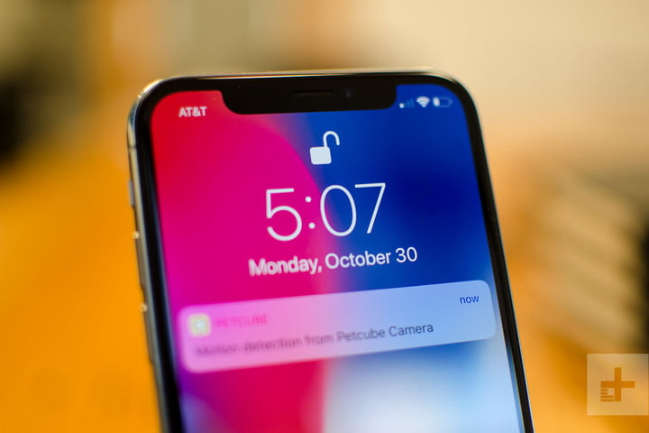

Evolving the MediaWiki platform: Why we replaced Tidy with a HTML5 parser

We've replaced Tidy, a tool that fixes HTML errors, with a HTML5-based tool. Given a HTML5 library, replacing Tidy is pretty straightforward, but it took us
three years to finally flip the switch. In this blog post, we'll explore how the time was spent which also throws light on the complexities of making changes
to certain pieces of the technical infrastructure powering Wikimedia wikis.
This switch was a collaborative effort between the Parsing, Platform, Community Liaison teams and other individuals (from the Product side) at the Wikimedia
Foundation and volunteer editing communities on various wikis. Everyone involved played important and specific roles in getting us to this important milestone.
In this post, the authors use "we" as a narrative convenience to refer to some subgroup of people above.
First: Some background
What is Tidy?
Tidy is a library that fixes HTML markup errors, among other things. It was developed in the 1990s when HTML4 was the standard and different browsers did not deal
with ill-formed HTML markup identically leading to cross-browser rendering differences.
Badly formed markup is common on wiki pages when editors use HTML tags in templates and on the page itself. (Example: unclosed HTML tags, such as a without a ,
are common). In some cases, MediaWiki itself introduces HTML errors. In order to deal with this, Tidy was introduced into MediaWiki around 2004 to ensure the output of MediaWiki
was well-formed HTML and to ensure it renders identically across different browsers... (CLICK ON IMAGE TO READ MORE)
iPhone X: Here’s everything you need to know about Apple’s best phone yet

The 10th anniversary Apple iPhone is here, and it's called the iPhone X (pronounced "iPhone Ten"). The Cupertino, California-based company made it official at an event on the Apple Campus in the Steve Jobs Theater — and in our iPhone X review, we call it "the best iPhone ever." Indeed, Apple CEO Tim Cook called the new iPhone X "the biggest leap forward since the original iPhone," and it’s easy to see why. The OLED display — an iPhone first — is called the Super Retina Display and measures 5.8 inches, with a resolution of 2,436 × 1,125 pixels. It features Dolby Vision and HDR10 for stunning high-contrast video playback, as well as TrueTone dynamic white-balance adjustment, a feature of the 10.5-inch iPad Pro and the new iPhone 8 models... (CLICK ON IMAGE TO READ MORE)
Samsung Galaxy S9 and S9+: Everything you need to know, all in one place

To the untrained eye, it's impossible to pick the Samsung Galaxy S9 out of a lineup of Galaxy S8s. The Galaxy S9 has the same all-glass body, Infinity screen, slim bezels, and 3.5mm headphone jack as its predecessor, but if you look closer, there are lots of little changes that add up to a worthy upgrade. Here's everything that's new about Samsung's latest flagship...(CLICK ON IMAGE TO READ MORE)